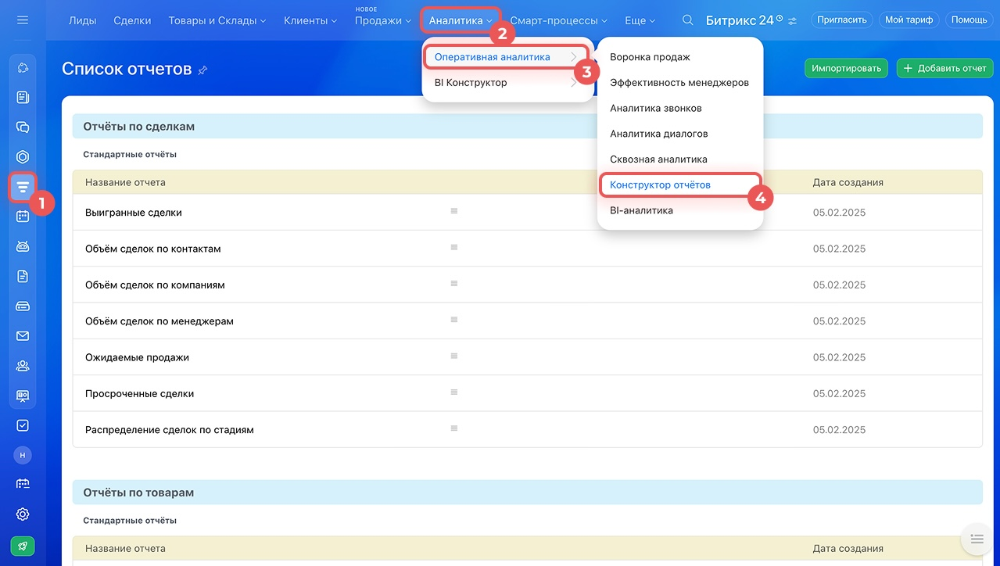
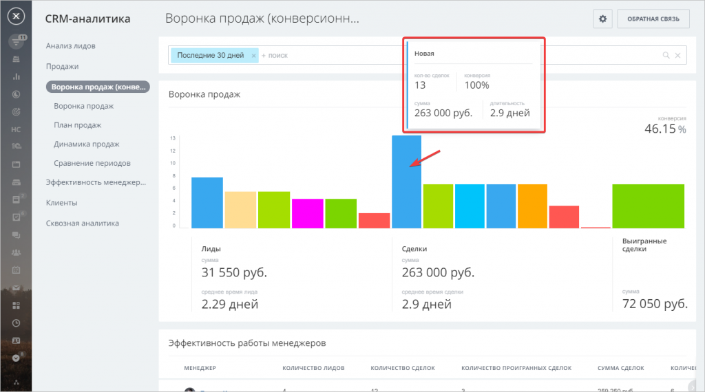
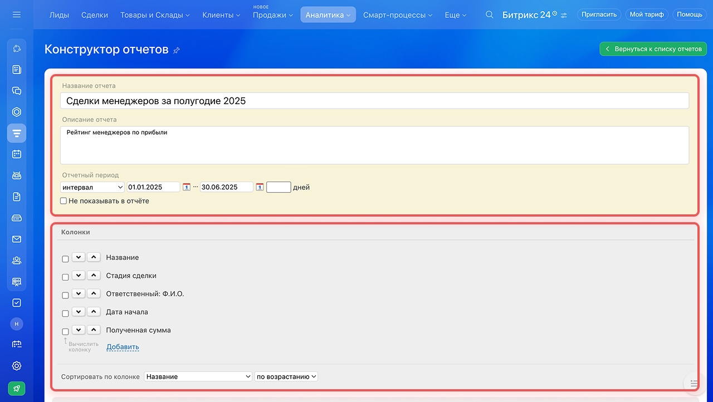
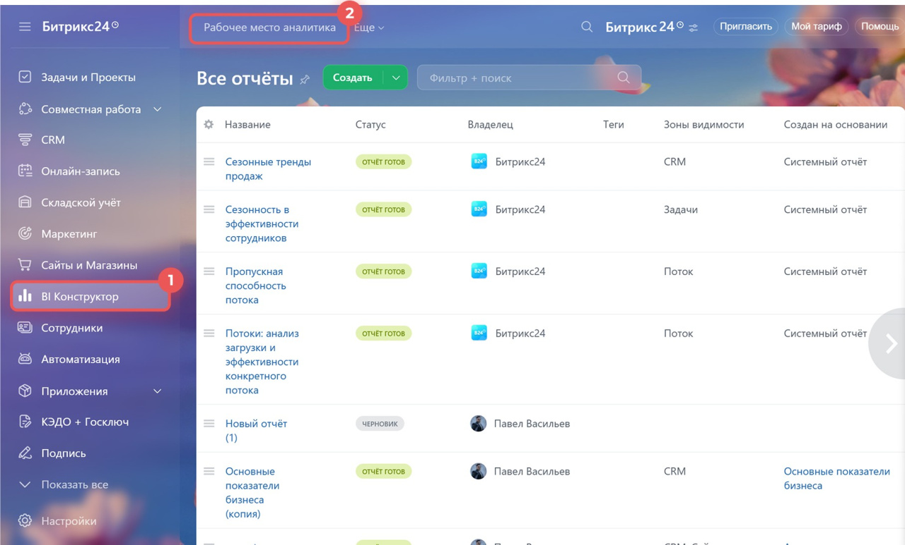

Отчётность в Битрикс24: какая бывает и когда она не работает
«Хотим видеть отчётность» — одна из самых частых фраз на старте проекта. И почти всегда за ней стоят три разных запроса сразу: готовая воронка продаж, свой отчёт под конкретную задачу и красивый дашборд для руководителя. В Битрикс24 за это отвечают три разных инструмента с разной степенью гибкости. Разбираем, что это за инструменты, что в них можно настроить под себя, а что — нет, и почему отчёт иногда остаётся пустым, даже когда всё настроено правильно.
Где в Битрикс24 живёт отчётность
Все отчёты и аналитика собраны в одном месте: CRM → Аналитика. Дальше портал предлагает на выбор три раздела разной глубины — от готовых отчётов до внешних BI-систем.

Оперативная аналитика — это готовые отчёты по воронке продаж, звонкам, менеджерам. Ничего не нужно настраивать, но и структуру отчёта поменять нельзя. Конструктор отчётов — визуальный редактор, в котором собирают свой отчёт из полей CRM: свой набор колонок, свой период, своя сортировка. BI-аналитика — выгрузка данных во внешние системы (DataLens, Power BI, Looker Studio) или во встроенный BI Конструктор, когда нужно объединить Битрикс24 с другими источниками данных. У нас есть отдельная статья про этот уровень — BI-аналитика для Битрикс24, здесь мы коснёмся её только коротко.
Оперативная аналитика: готовые отчёты
Раздел CRM → Аналитика → Оперативная аналитика. Это набор штатных отчётов, которые работают сразу после активации — без разработчика и без настройки.
Сюда входят: воронка продаж (классическая и конверсионная — показывает, на каких стадиях сделки чаще проваливаются), эффективность менеджеров, план продаж, динамика продаж, сравнение периодов, аналитика звонков и диалогов, сквозная аналитика по рекламным каналам. Отчёты по лидам и сделкам открываются в одном разделе, а раньше были разбросаны по разным блокам CRM.

 Менять период, фильтровать по менеджеру, воронке, источнику
Менять период, фильтровать по менеджеру, воронке, источнику- Смотреть данные по конкретной сделке, кликнув по сегменту
- Сравнивать периоды между собой
- Пользоваться сразу, без настройки и разработчика
- Менять состав показателей и структуру самого отчёта
- Добавить свою метрику или пользовательское поле CRM
- Объединить в одном отчёте несколько типов данных
- Подключить источник данных вне Битрикс24
Конструктор отчётов: своя отчётность без программиста
Раздел CRM → Аналитика → Конструктор отчётов. Здесь готовых шаблонов недостаточно, и отчёт собирают вручную: свой набор колонок, свой период, свои условия.
Логика простая: задаёте название и описание отчёта, отчётный период (интервал дат или число дней), а дальше выбираете колонки — стандартные поля сделки (стадия, ответственный, сумма, дата) и пользовательские поля CRM, если они заведены на портале. Колонки можно добавлять, убирать, сортировать по любой из них. Готовым отчётом можно поделиться с коллегами — передаётся именно шаблон отчёта, а не данные, поэтому у каждого сотрудника отчёт показывает только то, что разрешено его правами доступа.

- Произвольный период — интервал или число дней
- Состав колонок, включая пользовательские поля CRM
- Сортировку по любой из выбранных колонок
- Доступ коллег к готовому шаблону отчёта
- Источник — только данные CRM Битрикс24, без внешних систем
- Нет сложных вычисляемых метрик и формул поверх нескольких таблиц
- Есть ограничение по числу элементов в подборке — на очень больших объёмах лучше подходит BI Конструктор
- Новые счета конструктор не показывает — только старая версия счетов
BI-аналитика: когда нужно больше, чем CRM
Раздел CRM → Аналитика → BI-аналитика. Подключаем, когда одного портала мало: нужен единый дашборд из нескольких источников или отчёт для людей без доступа в Битрикс24.
Здесь два пути. BI Конструктор — визуальный редактор дашбордов прямо внутри портала (построен на Apache Superset): ничего подключать не нужно, но данные — в основном из Битрикс24. BI-аналитика — выгрузка датасетов во внешние системы: Yandex DataLens, Google Looker Studio, Microsoft Power BI. Так можно объединить сделки Битрикс24 с 1С, сайтом, рекламными кабинетами и получить один дашборд для руководителя или инвестора. Мы намеренно не разворачиваем эту тему здесь подробно — сравнение систем, примеры дашбордов и подводные камни собраны в отдельной статье: BI-аналитика для Битрикс24.

Что можно кастомизировать, а что нет
| Критерий | Оперативная аналитика | Конструктор отчётов | BI-аналитика / BI Конструктор |
|---|---|---|---|
| Структура отчёта | Фиксированная, менять нельзя | Свои колонки и сортировка | Полностью гибкая |
| Период | Стандартные пресеты и фильтр | Любой интервал или число дней | Любой, на стороне BI-системы |
| Свои поля CRM | Нет | Да, если поле заведено на портале | Да |
| Источники кроме Битрикс24 | Нет | Нет | 1С, сайт, реклама, CSV и другие |
| Настройка и обучение | Не требуется, работает сразу | Пара минут на отчёт, без разработчика | Нужна настройка подключения и датасета |
| Отдать «наружу» человеку без доступа в портал | Нет | Нет | Да — ссылкой или публикацией |
| Лучший сценарий | Быстро посмотреть воронку и звонки | Отчёт под конкретную разовую задачу | Управленческий дашборд из нескольких систем |
Когда отчётность в Битрикс24 «не работает»
Иногда отчёт настроен верно, но показывает не то, что ожидает руководитель. Обычно это не баг, а особенность логики отчёта — вот самые частые случаи из практики и официальной справки Битрикс24.
- «Прочий трафик» — так помечаются лиды и сделки, если Битрикс24 не смог определить источник обращения: например, переход из соцсети без UTM-меток
- Воронка продаж показывает исторический путь сделки, а не её текущий статус: если сделка побывала на стадии «Успех», а потом её вернули в работу и закрыли как проигранную, воронка всё равно зафиксирует прохождение «Успеха»
- Фильтр «Отчётный период» в сквозной аналитике считает по дате создания сделки, а не по дате оплаты — конверсия и стоимость привлечения строятся именно так
- Коллтрекинг работает не с любым номером — не все операторы и типы номеров поддерживают определение источника звонка, номер нужно предварительно проверить
- CRM-аналитика не видит новые счета — поддерживается только старая версия; для новых нужен BI Конструктор
- У CRM-аналитики есть лимит на число элементов в подборке — на очень крупных порталах часть отчётов лучше строить через BI Конструктор
Отчётность не создаёт данные — она их показывает
Это главная мысль статьи. Очень часто к нам приходят с запросом «настройте красивую отчётность», а по факту сотрудники в Битрикс24 почти не работают: сделки заводятся не всегда, звонки идут с личных телефонов, обсуждения — в мессенджерах мимо CRM. В такой ситуации любой, даже идеально настроенный отчёт будет пустым или бессмысленным — не потому что Битрикс24 «не работает», а потому что показывать нечего.
Воронка «без середины»
Хотят конверсионную воронку по стадиям, но менеджеры заводят сделку и сразу переводят её либо в «Успех», либо в «Отказ» — промежуточные стадии пропускаются. Отчёт технически работает, но показывает, что «все сделки закрываются за один шаг», хотя реально процесс продажи занимает недели.
Реклама без меток
Хотят сквозную аналитику «какой канал приносит продажи», но на сайте и в рекламных кабинетах не настроены UTM-метки. В отчёте почти весь трафик попадает в «Прочий трафик» — система физически не может определить источник, если его не передали.
Звонки мимо телефонии
Хотят отчёт по загрузке и эффективности менеджеров, но часть команды звонит с личных мобильных, а не через телефонию Битрикс24. У лучшего по факту продавца в отчёте — «0 звонков», потому что система видит только то, что прошло через портал.
Сумма сделки «потом заполним»
Хотят отчёт по выручке и среднему чеку, но при создании сделки сумму и товары не указывают — «заполним перед закрытием». Часть сделок закрывается без заполнения, и отчёт занижает реальную выручку иногда в разы.
«Перед тем как настраивать отчёты, мы всегда смотрим на сами данные: заводятся ли сделки, двигаются ли по стадиям, заполняются ли обязательные поля. Если нет — начинаем не с конструктора отчётов, а с регламента работы в CRM. Иначе красивый дашборд просто быстрее покажет, что учёт сломан». Команда «АйТи Аналитикс»
Что нужно, чтобы отчётность была полезной
- Все обращения и сделки заводятся в CRM, а не в блокноте, Excel или голове менеджера
- Стадии воронки отражают реальный процесс продажи и сделки двигают по ним по мере работы, а не «в один клик» перед отчётом
- Обязательные поля — источник, сумма, товары, ответственный — заполняются по ходу работы, а не задним числом
- Звонки и переписки идут через Битрикс24: телефонию, Открытые линии, почту — а не мимо портала
- Сайт и рекламные кабинеты размечены UTM-метками для сквозной аналитики и коллтрекинга
- За дисциплиной внесения данных следит конкретный ответственный, а не «все понемногу»
Что входит в настройку отчётности
Аудит данных
Смотрим, что реально происходит в CRM: заводятся ли сделки, двигаются ли по стадиям, заполняются ли поля, которые нужны для будущих отчётов.
Регламент внесения данных
Если данных не хватает — сначала настраиваем обязательные поля, стадии воронок и правила работы, а не отчёты поверх пустоты.
Оперативная аналитика и конструктор
Подключаем штатные отчёты и собираем свои через конструктор — под задачи руководителя, отдела продаж, маркетинга.
Сквозная аналитика и коллтрекинг
Настраиваем UTM-метки, проверяем номера на поддержку коллтрекинга, чтобы отчёты по каналам показывали реальную картину, а не «Прочий трафик».
BI-аналитика при необходимости
Если нужен дашборд из нескольких систем или отчёт для людей без доступа в портал — подключаем BI Конструктор или внешние BI-системы (подробнее — в отдельной статье).
Обучение команды
Показываем руководителям и менеджерам, как читать отчёты и почему важно вносить данные вовремя — без этого отчётность держится недолго.
Настроим отчётность, которой можно доверять
Проверим, что реально попадает в CRM, наведём порядок в данных и соберём отчёты — от готовой воронки продаж до дашборда для руководителя.